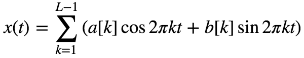

Making The Web Rock
Web Audio
Chris Wilson / @cwilso
Google Chrome Developer Advocate
The keynote is modified from this guy's version 👆
Kyle He / @kyleehee
Why another audio API?
We have <audio> already!
<audio> hides the steps of loading, decoding and playing
<audio controls src="mysound.ogg"></audio>Sometimes that's the right thing!
Web Audio provides:
1) Precise timing of lots of overlapping sounds
Web Audio provides:
2) An audio pipeline/routing system for effects and filters
Web Audio provides:
3) Hooks to analyze and visualize audio data on the fly
DEMO
(Analysis, Filtering, Visualization)
What is audio useful for, anyway?
- Gaming
- Application UI feedback
- Musical applications
- Audio education
- Audio processing
Web Audio API is based on a graph

Build
var audioHtmlElement = document.querySelector('audio')
var audioContext = new AudioContext()
var sourceNode = audioContext.createMediaElementSource(audioHtmlElement);
sourceNode.buffer = audioBuffer;
sourceNode.connect( audioContext.destination );
sourceNode.start();Audio Source
- audioContext.createBufferSource()
- audioContext.createMediaStreamSource()
- audioContext.createMediaElementSource()
- audioContext.createOscillator()
Audio Destination
- audioContext.destination()
- audioContext.createMediaStreamDestination()
Loading and Playing a Sound
var myBuffer = null, context = new AudioContext();
function loadDogSound(url) {
var request = new XMLHttpRequest();
request.open("GET", "dogBarking.mp3", true);
request.responseType = "arraybuffer";
request.onload = function() {
context.decodeAudioData( request.response,
function(buffer) { myBuffer = buffer; } ); }
request.send();
}
function playSound( buffer ) {
var sourceNode = audioContext.createBufferSource();
sourceNode.buffer = myBuffer;
sourceNode.connect( audioContext.destination );
sourceNode.start( 0 );
}MediaStreamSource
UserMedia
navigator.getUserMedia({
audio: true,
video: true
}, function(stream) {
var source = audioCtx.createMediaStreamSource(stream);WebRTC
var dest = ac.createMediaStreamDestination();
var mediaRecorder = new MediaRecorder(dest.stream);Oscillator
var oscillator = audioCtx.createOscillator();
// sine, square, sawtooth, triangle, custom
oscillator.type = 'square';
oscillator.frequency.value = 3000; // value in hertz
oscillator.start();Periodic Wave

var real = new Float32Array(2);
var imag = new Float32Array(2);
real[0] = 0; imag[0] = 0;
real[1] = 1; imag[1] = 0;
var wave = audioContext.createPeriodicWave(real, imag, {
disableNormalization: true
});
oscillator.setPeriodicWave(wave);audio effects filters

DEMO: "Analog" Synthesizer
Audio Volume Control

var gainNode = audioContext.createGain();
sourceNode.connect( gainNode );
gainNode.connect( audioContext.destination );
function toggleMuted() {
gainNode.gain.value = gainNode.gain.value ? 0 : 1
}Effects in Web Audio
- Biquad Filtering - lowpass, hipass, etc.
- Delays and delay effects
- Compression
- Convolution
- Waveshaping
- Positioning/Panning/Doppler
- Custom Javascript processing
- ...
Channels

ChannelSplitterNode

ChannelMergerNode
var splitter = audioContext.createChannelSplitter(2);
var merger = audioContext.createChannelMerger(2);
source.connect(splitter);
// Reduce the volume of the left channel only
var gain = audioContext.createGain();
gain.value = 0.5;
splitter.connect(gain, 0);
gain.connect(merger, 0, 1);
splitter.connect(merger, 1, 0);
merger.connect(audio.destination);
});Web Audio minimizes glitching
Web Audio runs in a separate thread,
so audio and graphics don't compete as much.
You schedule Web Audio events in the future,
and the system takes care of them.
Scheduling Sound Playback
function playEverySecondForTenSeconds( myBuffer ) {
for (var i=0; i<10; i++) {
var sourceNode = context.createBufferSource();
sourceNode.buffer = myBuffer;
sourceNode.connect( context.destination );
sourceNode.start( context.now + i );
}
}Scheduling in a complex world
For dynamic rhythms, you need to combine web audio and system timing. See
article
DEMO: Drum Machine
Scheduling in Web Audio
Not just about start( time )!
ANY AudioParam can be scheduled -
frequency, gain, detune, delayTime...
Scheduling on AudioParams
interface AudioParam {
attribute value;
// Parameter automation
void setValueAtTime( value, time );
void linearRampToValueAtTime( value, time );
void exponentialRampToValueAtTime( value, time );
void setTargetAtTime( target, time, timeConstant );
void setValueCurveAtTime( values, time, duration );
void cancelScheduledValues( startTime );
}
Gain Fade Example
var envelope = context.createGain();
mySoundNode.connect( envelope );
envelope.connect( context.destination );
var now = context.currentTime;
envelope.gain.setValueAtTime( 0, now );
envelope.gain.linearRampToValueAtTime( 1.0, now + 2.0 );
envelope.gain.linearRampToValueAtTime( 0.0, now + 4.0 );
mySoundNode.start(0);AnalyserNode

DEMO:
Visualizer
- AudioContext.createAnalyser()
- -------
- AnalyserNode.fftSize
- AnalyserNode.frequencyBinCount
- -------
- AnalyserNode.getFloatFrequencyData()
- AnalyserNode.getByteFrequencyData()
- AnalyserNode.getFloatTimeDomainData()
- AnalyserNode.getByteTimeDomainData()
Time Domain Graph
var analyser = audioCtx.createAnalyser();
analyser.fftSize = 2048;
var bufferLength = analyser.frequencyBinCount;
var dataArray = new Uint8Array(bufferLength);
function draw() {
analyser.getByteTimeDomainData(dataArray);
canvasCtx.fillStyle = 'rgb(200, 200, 200)';
canvasCtx.fillRect(0, 0, WIDTH, HEIGHT);
canvasCtx.lineWidth = 2;
canvasCtx.strokeStyle = 'rgb(0, 0, 0)';
canvasCtx.beginPath();
var sliceWidth = WIDTH * 1.0 / bufferLength;
var x = 0;
for(var i = 0; i < bufferLength; i++) {
var v = dataArray[i] / 128.0;
var y = v * HEIGHT / 2;
if(i === 0) {
canvasCtx.moveTo(x, y);
} else {
canvasCtx.lineTo(x, y);
}
x += sliceWidth;
}
canvasCtx.lineTo(canvas.width, canvas.height/2);
canvasCtx.stroke();
requestAnimationFrame(draw);
}
draw();Frequency Domain Graph
function draw() {
canvasCtx.clearRect(0, 0, WIDTH, HEIGHT)
analyser.getByteFrequencyData(dataArray)
let barWidth = WIDTH / bufferLength
let barHeight
let left = 0
for (let i = 0; i < bufferLength; i++) {
barHeight = dataArray[i] / 256 * HEIGHT
canvasCtx.fillRect(left, HEIGHT - barHeight, barWidth, barHeight)
left += barWidth
}
requestAnimationFrame(draw);
}ScriptProcessorNode

var scriptNode = audioCtx.createScriptProcessor(4096, 1, 1);
scriptNode.onaudioprocess = function(audioProcessingEvent) {
var inputBuffer = audioProcessingEvent.inputBuffer;
var outputBuffer = audioProcessingEvent.outputBuffer;
for (var channel = 0; channel < outputBuffer.numberOfChannels; channel++) {
var inputData = inputBuffer.getChannelData(channel);
var outputData = outputBuffer.getChannelData(channel);
for (var sample = 0; sample < inputBuffer.length; sample++) {
outputData[sample] = inputData[sample];
outputData[sample] += ((Math.random() * 2) - 1) * 0.2;
}
}
}Homework?
Diy your own Virtual Theremin
Web MIDI API next time?
Donate
to me first so that I can buy a MIDI device later. 😂
End
Questions?